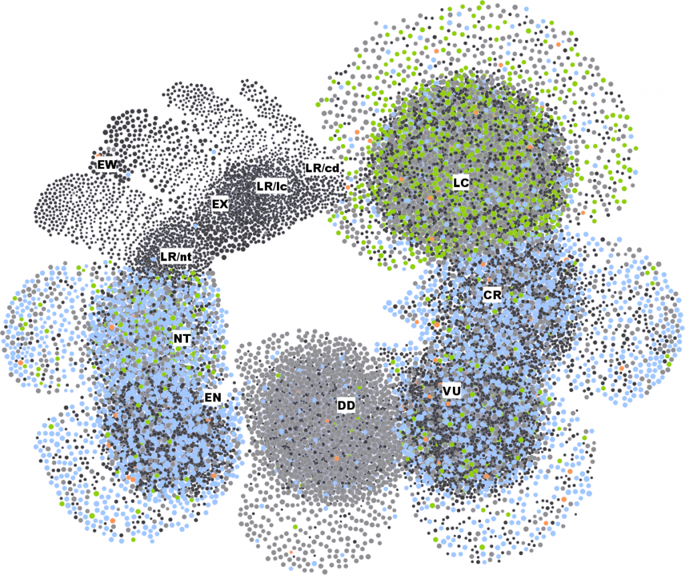
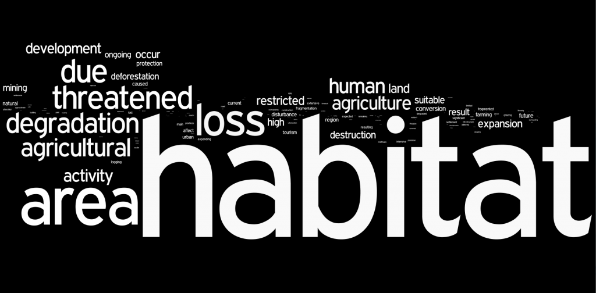
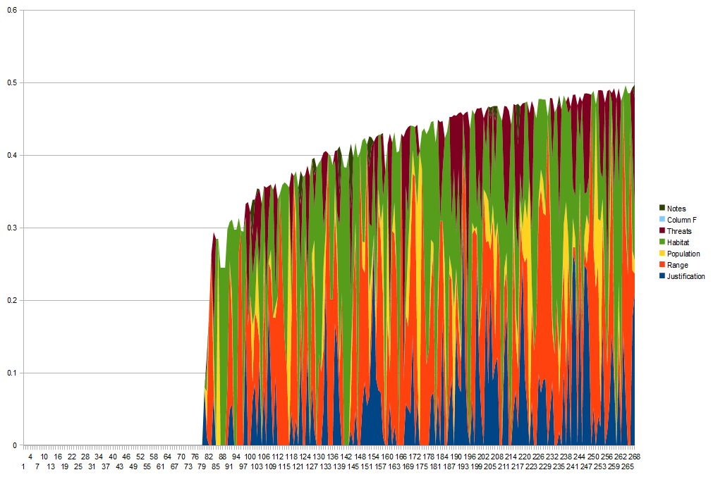
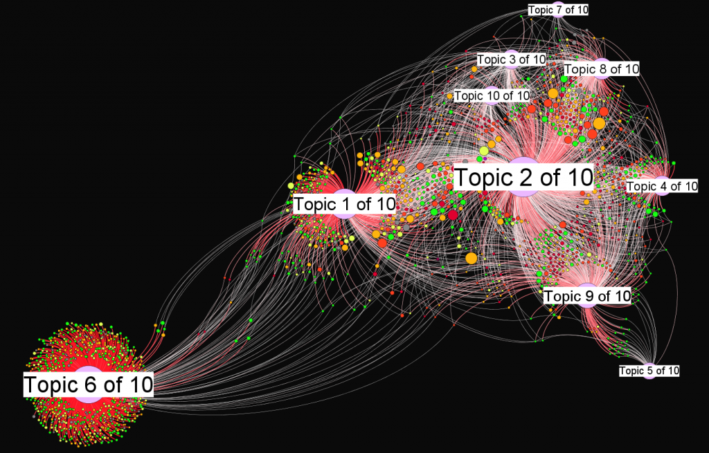
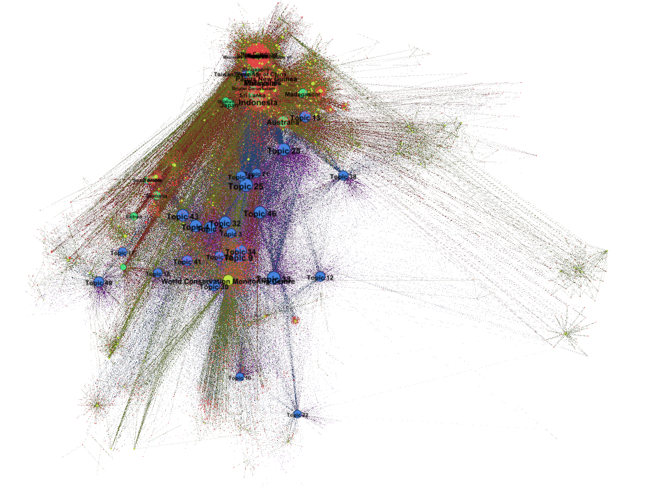

Congratulations to Ursula on her being awarded a Guggenheim Fellowship to further pursue Cultures of extinction: narrative, database, and biodiversity loss. I’ve been working closely with her these last few months in an attempt to compress and reformulate biodiversity databases into a variety of structural and visual forms. To better comprehend these databases, we’ve used spatial, textual and network analysis.
Below are a few visual expressions of that work.





